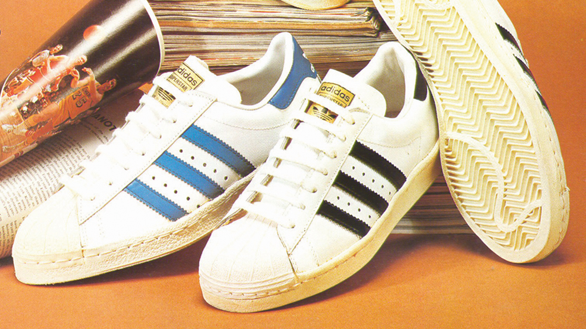

홈 > 브랜드 매거진 > 아디다스
아디다스
아디다스(adidas AG)는 1949년 아디 다슬러(Adolf Dassler)가 독일 헤르초게나우라흐에서 설립한 스포츠웨어 기업으로 운동화·의류·스포츠용품을 제조한다. 그 기원은 1924년 다슬러 형제가 세운 신발공장이며, 1947~48년 형제의 결별 뒤 형 루돌프가 경쟁사 푸마를 세웠다.
산업 분야 스포츠·아웃도어 · 공개 등급 편집 검수 · 브랜드 평가 4.7 ★


한눈에 보는 브랜드
아디다스(adidas AG)는 1949년 8월 아디 다슬러가 독일 헤르초게나우라흐에서 설립한 스포츠웨어 기업으로, 운동화·의류·스포츠용품을 제조한다. 그 기원은 1924년 아디와 형 루돌프 다슬러가 함께 세운 게브뤼더 다슬러 신발공장이며, 1947~48년 형제의 결별 후 아디가 아디다스를, 루돌프가 푸마를 세웠다.
본사는 지금도 헤르초게나우라흐에 있으며, 나이키에 이어 세계 2위 규모의 스포츠웨어 제조사다.
브랜드 관점
아돌프 다슬러가 1948년에 설립한 독일의 스포츠 브랜드로 운동화, 운동복, 운동용품 등을 제조 · 판매함. 아디다스의 정의 및 기원 아디다스(adidas)는 바이에른(Bayern) 주의 헤르초게나우라흐(Herzogenaurach)에 본사를 둔 독일의...
“스물여섯 나이에 그토록 소중히 여기던 브랜드인 아디다스를 찾아가던 날, 영국 왕실의 식사 초대라도 받은 듯한 긴장감에 손은 땀으로 The interview with Neil Boorman “스물여섯 나이에 그토록 소중히 여기던 브랜드인 아디다스를 찾아가던 날, 영국 왕실의 식사 초대라도 받은 듯한 긴장감에 손은 땀으로 흥건하고 맥박은 요동쳤으며, 사무실은 아라비안 나이트에 나오는 보물 동굴 같았다.” 이 문장은 책의 제목으로 더 유명한 《나는 왜 루이 뉴욕 소호에 위치한 아디다스 플래그 샵에는 아디다스의 브랜드 철학이 적혀있다. 는지 그리고 무엇이 되어야만 하는지를 알고 있다.
뉴욕 소호에 위치한 아디다스 플래그 샵에는 아디다스의 브랜드 철학이 적혀있다. 불가능, 그것은 나약한 사람들의 핑계에 불과하다.
시작과 성장
1948년, 아돌프 다슬러는 아디다스를 세우고 기능성 스포츠화를 만들어, 선수들이 최상의 실력을 발휘할 수 있도록 도왔다. 현재 아디다스는 전 세계 160개국에 진출하였으며, 다양한 스포츠 웨어를 생산하는 브랜드로 성장했다.
브랜드 아이덴티티
브랜드의 핵심 식별 요소는 세 줄의 평행선(Three Stripes)으로, 아디다스는 1952년 핀란드 브랜드 카르후(Karhu)로부터 이 표식을 인수해 자사 상징으로 정착시켰다. 1971년 디자인되어 1972년 공개된 트레포일(Trefoil) 로고는 세 갈래 잎 형태에 세 줄 모티프를 결합해 의류·액세서리 사업의 상징이 되었다.
1989년 영입된 크리에이티브 디렉터 피터 무어(Peter Moore)가 디자인한 사선형 '쓰리 바(Three Bars)' 로고는 1991년 이큅먼트 라인과 함께 도입되어 퍼포먼스 라인의 상징이 되었고, 이를 워드마크와 결합한 '배지 오브 스포츠'는 1996년 명명되었다. 핵심 색상은 흑백을 기조로 하며, 워드마크는 역사적으로 기하학적 산세리프 ITC 아방가르드 고딕 계열에 기반한 것으로 알려져 있다.
제품과 서비스
아디다스의 제품은 올림픽이나 월드컵같은 글로벌 스포츠 행사에서 좋은 성적을 거둔 선수들이 신는 신발로 알려지며 인기를 얻기 시작했다. 이 후, 선수들을 위한 신발에서 힙합과 스트리트 패션의 상징으로 거듭났고, 현재 다양한 라이프스타일 웨어를 출시하고 있다.
아디다스는 디지털 기술과 서비스를 이용하여, 일반 소비자들에게 프로 선수가 받는 것과 같은 체계적인 코칭 서비스와 특화된 제품을 제공하고 있다. 또한, 운동을 즐길 수 있는 환경을 조성하고 마라톤 대회같은 이벤트를 개최하여 스포츠 문화를 사회에 확산시키고 있다.
운동복, 풋웨어, 스포츠 장비, 위생용품 운동복, 풋웨어, 스포츠 장비, 위생용품
사람들
현재 상태
아디다스는 현재 프랑크푸르트 증권거래소 상장사로, 트레포일(오리지널스)과 사선형 쓰리 바(퍼포먼스)를 병행하는 이원적 로고 체계를 유지하고 있다.